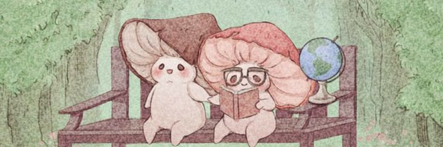

Traducció
Traducció de textos entre diferents llengües, respectant-ne el sentit, el context i la intenció original.
Benvinguda al meu món
Un espai entre paraules, llengües i cultures.

01 · La bibliotecària
Soc l'Elsa, estudiant de Traducció i Interpretació a la Universitat Autònoma de Barcelona. M'interessa tot allò que passa quan les paraules viatgen d'una llengua a una altra: els matisos que canvien, les referències culturals que necessiten context i les idees que mereixen ser compreses més enllà de les fronteres lingüístiques.
Més informació →02 · El meu escriptori
Traducció de textos entre diferents llengües, respectant-ne el sentit, el context i la intenció original.
Revisió de l'ortografia, la gramàtica, la coherència i la claredat dels textos.
Treball amb continguts audiovisuals, sincronització de subtítols i accessibilitat.
Conversió de contingut oral en text escrit, amb especial atenció a la precisió.
Els serveis s'oferiran d'acord amb la meva formació, les meves competències i les característiques de cada projecte.
03 · Les prestatgeries
Espero poder compartir una col·lecció de projectes acadèmics, lingüístics i creatius que reflecteixi el meu recorregut entre llengües i cultures.
04 · Correspondència
Tens una proposta, un projecte o vols posar-te en contacte amb mi? Em pots trobar aquí:
Un petit secret